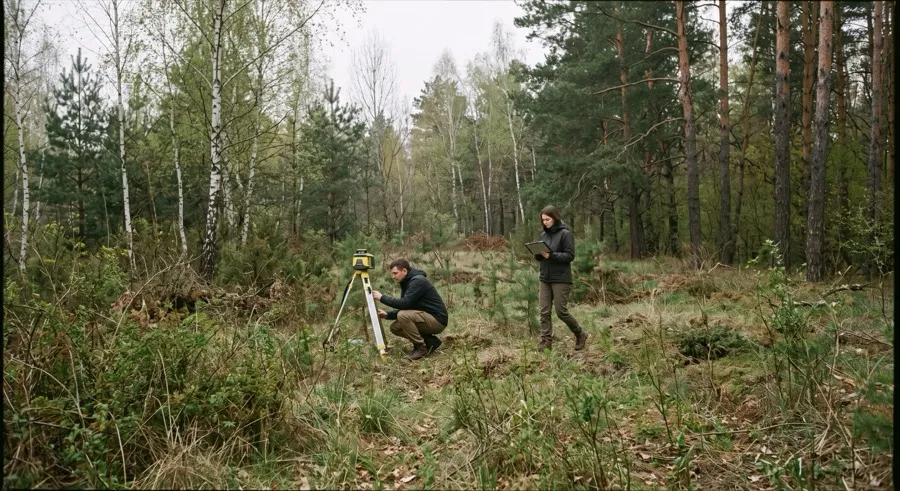
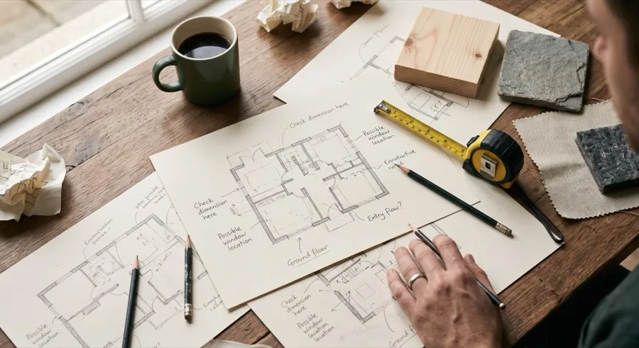
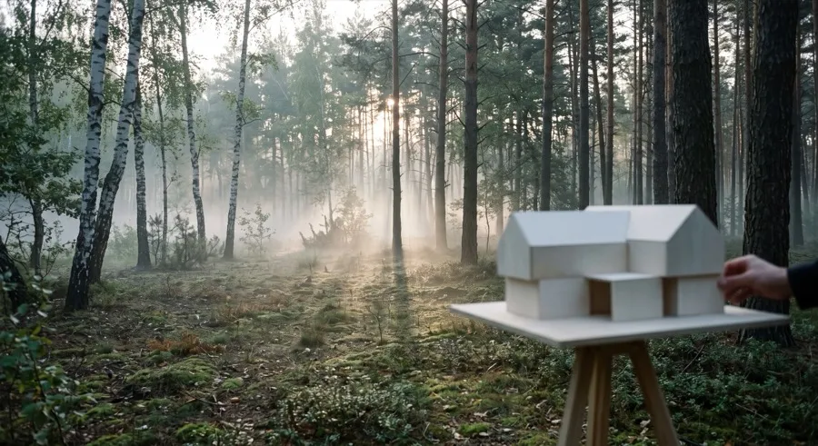
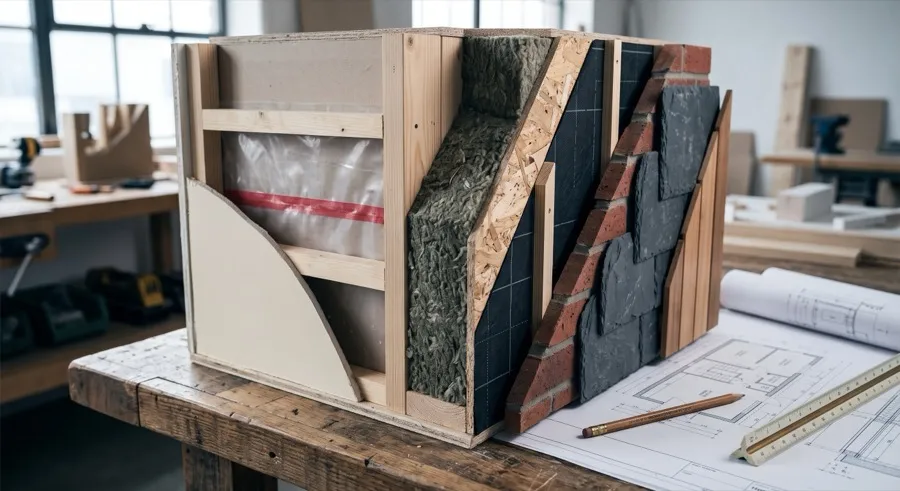
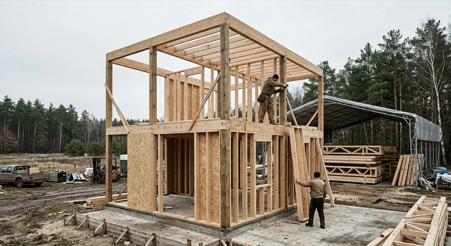
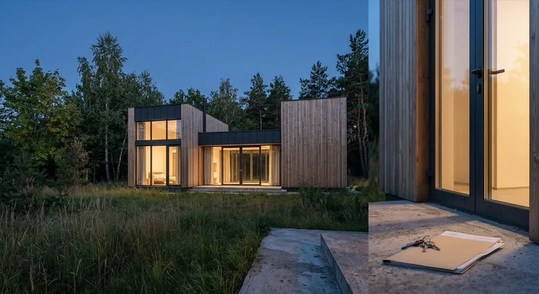

Процес
Від ділянки до ключів
Шість етапів, кожен із чітким результатом на виході. Орієнтовна тривалість усього шляху — 24–48 тижнів залежно від обсягу; точні терміни узгоджуються після першого етапу
Дослідження
Виїжджаємо на ділянку: рельєф, сторони світу, під'їзд, комунікації, сусідні будівлі. Розмовляємо про те, як родина планує жити в домі — не тільки скільки кімнат потрібно
Тривалість: 1–2 тижні / Результат: аналіз ділянки та бриф

Визначення
Бриф перетворюється на програму: перелік приміщень, зв'язки між ними, пріоритети за бюджетом. На цьому етапі ще можна сперечатися про все
Тривалість: 1–2 тижні / Результат: програма проєкту

Проєктування
Об'єми, світло і матеріали тестуються проти конкретної ділянки — не абстрактно. Перевіряємо, як сонце входить у кімнати о різній порі року
Тривалість: 4–6 тижнів / Результат: ескізний проєкт

Інжиніринг
Структура, утеплення й інженерні системи прораховуються до вузла. Тут проєкт стає документом, за яким можна будувати, а не просто картинкою
Тривалість: 4–6 тижнів / Результат: робоча документація

Будівництво
Каркас виробляється під накриттям, фундамент готується паралельно. Збірка на ділянці — найшвидший етап, бо більшість роботи вже зроблена заздалегідь
Тривалість: 14–24 тижні / Результат: змонтований і закритий контур

Передача
Перевірка систем, документація на будинок і матеріали, передача ключів. Студія лишається на зв'язку й після здачі об'єкта
Тривалість: 1–2 тижні / Результат: ключі та повний пакет документів

Готові почати з першого етапу?
Дослідження ділянки — перший крок і водночас перевірка, чи ми одне одному підходимо
Розпочати проєкт